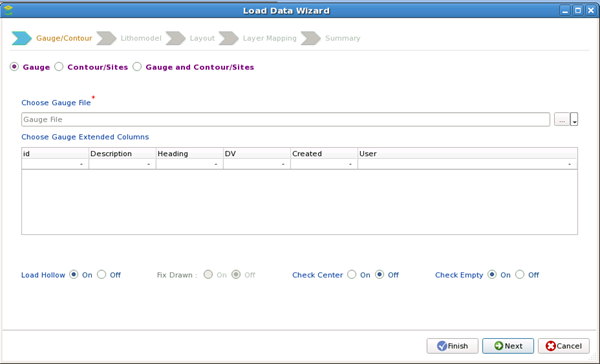
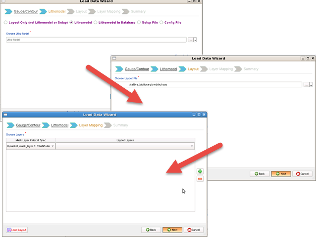
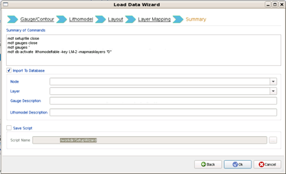
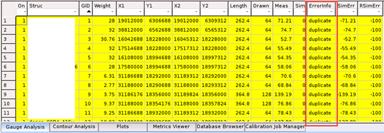
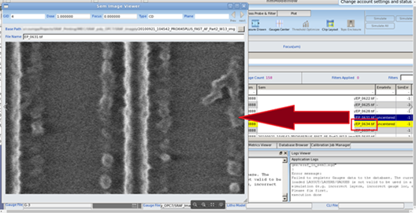

A gauge file
typically has a Lithomodel file and a design
file associated with it, so that process information is kept together
in the database.
Prerequisites
A
gauge or super gauge data file in Calibre nmModelflow format
Gauge files
that have user-defined columns must have their initial comment line
start with ## instead of # to signal to Calibre nmModelflow that
there are user-defined columns. They cannot use names that match
existing column names. Column names are case-insensitive. (Special
characters are not allowed in column names, except for ##On and
%95CI, both of which are not user defined.)
Gauges from modelflow_v2 gauges
are converted automatically. If you want to manually convert gauges
for use with Calibre nmModelflow, see the task “Converting modelflow_v2 Gauge Files”.
Note: Sim Error values for gauges in Calibre nmModelflow use
the opposite sign convention compared to Calibre WORKbench modelflow_v2.
Plots coming from Calibre nmModelflow may be flipped upside down
compared to their modelflow_v2 counterparts. To keep the sign convention
consistent, set the environment variable:
MDF_JOB_REPORT_ERROR_PLOTS_USE_MFV2_POLARITY 1
One
of the following items is recommended (but not required):
The
corresponding layout file.
Procedure
- Open the Calibre nmModelflow
GUI (Litho > nmModelflow).
- In the Gauges tab,
click the Load button.
Tip You can
use the dropdown menu for the Load button
to reload your most recently-loaded gauge files.
The Load Data Wizard dialog
box appears.
Note: Alternatively, you can use the Add Using Wizard button
from the Gauges list in the Database Browser. The Gauges Wizard
that it invokes uses a similar flow.
- Select the appropriate option
(Gauge, Contour, or Gauge and Contour) from the list, then choose
the appropriate file(s).
If there are
custom columns in your loaded gauge file, they can be selected for inclusion
from the Choose Gauge Extended Column List.
Activating
the Fix Drawn option causes Calibre nmModelflow to check the layout when
the gauges are loaded. If necessary, the Drawn column is adjusted
to match the CDs measured in the layout.
Activating
the Load Hollow option causes Calibre nmModelflow to skip costly preprocessing
actions (checks for uncentered gauges and clipping the layout for preparing
the data for simulation) in order to load the gauges more quickly.
Note: The mdf gauges loadhollow command is the CLI equivalent
of this option.
By default, the Check Empty option is selected.
Unselecting this option allows you to load gauge files that contain
empty gauges. (This option is useful for curvilinear mask gauge
files.)
Click Next to continue.
Figure 1. Load Data Wizard for
Gauges
- Select a data
source using one of the radio buttons, then a layout, and then map
the layout layers, clicking Next to proceed
through each form (as shown in Figure 2):
Layout only (not Lithomodel or Setup) —
Skips mask layer mapping and loads the specified layout along with
the gauge file.
Note: If you are using the Gauge Wizard, loading a layout is
the only available option.
Lithomodel —
Uses a previously created litho model to associate with the gauges. You
must map the mask layers in the litho model to the layers in the
layout.
Lithomodel In Database —
Uses the litho model that you choose from the list of previously-saved
litho models in the Calibre nmModelflow database.
Setup File —
Uses a Calibre nmModelflow setup file to load relevant information.
Config File —
Loads an MDF .in configuration
file. Typically, this is used for DDM group file loading and VEB
selective_biasing_type1 layer definition.
Note: The layer assignments in the Load Data Wizard are only
for layers you intend to perform simulation and calibration on.
For users who have multilayer VEB files, do not map underlying
layers in the Load Data Wizard. Underlying layers are mapped in
the Litho Model Creation Wizard.
Figure 2. Load Data Wizard Form
Progression
- Configure the Summary screen
as follows:
- Review the Summary
of Commands for the setup.
- Set
the Node, Layer, Gauge Description, and Lithomodel Description fields.
These descriptions are displayed in the Gauges list on completion.
- (Optional)
Select the Save Script checkbox to save the command summary for
use from the command line.
- It is
strongly advised that you leave the Import to Database checkbox
selected, in order to reuse the imported litho model in calibration
jobs.
Note: If you are using the Gauge Wizard from the
Database Browser, this checkbox is not available, because adding
the gauges to the database is assumed.
Click OK to finish importing
the data.
Figure 3. Load Data Wizard Commands
Summary
Results
Calibre nmModelflow generates a setup
file, runs the commands, and loads all data into the Calibre nmModelflow
GUI.
Calibre nmModelflow
performs error checking for bad gauges.
Gauges that are duplicated (having
identical coordinates) in a loaded gauge file are marked as “duplicate”
in the ErrorInfo column, which is added to the imported gauge file.

Tip You can remove the duplicate gauges using
the “mdf gauges remove gidlist”,
where gidlist is
a list of GIDs separated by spaces.
If the gauge
file contains a SEM column, the entries in the column can be double-clicked to
display the SEM image.

If the gauge
file contains Count and StDev columns with valid values, Calibre nmModelflow
automatically calculates the 95% confidence interval and writes
it into the 95CI column.
Note: If the 95CI column already contained data in your input
gauge file, it is overwritten by the automatic calculations.
On rare occasions,
design files that contain SRAF gauges may detect errors while loading
the gauge file if the default SRAF tolerance causes a centering
error. Set a new tolerance in the Command window using the mdf gauges
sraftolerance command, then try reloading the gauges.
If you load both gauges and contours that were
derived from the same data, use the contour matching CLI command
to tune the dose so that the threshold values for the gauges and
contours match each other.
mdf gauges matchcontour [-out output_filename]